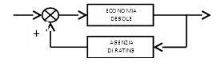
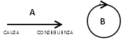
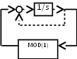
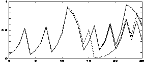

Bologna, 8 novembre 2013
Carissimi,
ci rivedremo lunedì 18 novembre, alle ore 21, presso il Convento San Domenico, che ci ospiterà nella sua “sala rossa”, cui si accede da Via San Domenico 1.
Durante lo scorso incontro, dopo un lungo dibattito ci è sembrato di poter identificare, come tema generale per le riflessioni di questo anno, quello dei limiti e delle indeterminazioni delle nostre discipline.
Poiché il prof. Eugenio Sarti aveva scritto su questo tema un libro, (L'albero senza radici - Un'apologia della tecnica, Ed. Dehoniane Bologna, 2000) purtroppo oggi irreperibile, ha accettato di iniziare lui stesso. Lo ringrazio a nome di tutti.
L'argomento sarà:
alcuni limiti e indeterminazioni nella tecnologia.
Un cordiale saluto in attesa di rivederci
fra Sergio Parenti O.P.
Breve resoconto dell'Incontro Interdisciplinare del 18 novembre 2013
a cura di fra Sergio Parenti O.P.
SARTI – Mi preparo a raccontarvi la sostanza dei miei quasi 50 anni di vita universitaria, cresciuti attorno al concetto di retroazione. Per capire, vorrei raccontarvi una piccola esperienza. Quando mesi fa qualcuna delle agenzie di rating declassò l'Italia, fece un'azione in qualche modo contraddittoria: la nostra economia era debole e aveva bisogno di aiuto, la riduzione di classe rese più difficile allo Stato procurarsi denaro facendo le aste di titoli pubblici, il che rendeva ancora più debole la nostra economia. Era un anello perverso, che può produrre la distruzione dello stesso impianto. È quello che noi chiamiamo una retroazione positiva (positiva nel ridurre): e questa situazione diventa facilmente di instabilità.

Quello che è successo nel reattore nucleare di Fukushima è stato precisamente un fenomeno di instabilità legato alla distruzione dei circuiti di raffreddamento.
Di solito le retroazioni positive sono nefaste: tendono all'instabilità o ad alterazioni dello stato del sistema. Poi ci sono retroazioni negative, e di questo abbiamo tantissimi esempi. Uno dei primi esempi nella tecnica è stato il regolatore di Watt della regolazione della velocità delle macchine a vapore, che pompavano l'acqua nelle miniere: succedeva che qualcuno metteva troppo carbone nel focolare. Di conseguenza aumentava la pressione del vapore, la macchina cominciava ad accelerare e la sua accelerazione sarebbe arrivata all'esplosione. Watt collegò all'albero principale della macchina un telaio che conteneva delle masse e girava attorno all'albero: per effetto di forza centrifuga le masse si allontanavano e con questo abbassavano la portata del vapore.
PARENTI – La retroazione positiva ha un effetto di acceleratore, quella negativa di freno?
SARTI – Non necessariamente. Se il fuochista mette troppo poco carbone nel focolare avviene il contrario: le masse si spostano e danno maggiore accesso al vapore, facendo accelerare la macchina. Il discorso del positivo e negativo riguarda il rapporto tra causa ed effetto: nella positiva si produce un effetto che potenzia l'effetto e questo può essere vantaggioso (aumenta il guadagno del sistema, la potenza del sistema), ma a svantaggio della regolazione, fino al rischio della stabilità. La retroazione negativa corregge gli errori. I sistemi di generazione della corrente elettrica producono una frequenza costante. Il regno delle retroazioni negative sono i processi di omeostasi dei viventi: la temperatura del corpo, la glicemia (le cellule nervose hanno bisogno di una quantità determinata di glucosio)... Vi sono sensori che sentono le grandezze da regolare e mettono in moto degli attuatori che regolano.
Dentro a questo dato c'è un fatto di estrema importanza dal punto di vista concettuale e storico.
La nostra scienza, fino a tutto l'800, è fatta di ragionamenti a catena aperta: si scopre che un certo fenomeno è effetto di una certa causa, che è effetto di un'altra causa, ecc. Questa rappresentazione causa-effetto deve passare ad un altro schema col concetto di retroazione. Da uno schema A ad uno schema B.

La retroazione definisce uno schema ad anello chiuso in cui questo rapporto causa-effetto si svolge attraverso un ciclo... Le culture orientali avevano capito questo. Swami Matthias1 osservava che se si va avanti in un anello solo si produce poco di conoscenza, ma se si vede tutta la realtà come una spirale, si inquadra il nostro pensiero assieme al pensiero orientale e si costruisce qualcosa che fino ad ora, nonostante il nostro parlare di comportamenti ciclici, ancora deve essere esplorata.
Mi piace, per introdurre queste cose, ricordare la preghiera di S. Bernardo nel XXX canto del Paradiso dice: “Vergine Madre, figlia del tuo Figlio...”, in cui c'è una chiusura immediata, ma poi dice: “Tu sei colei che l'umana natura nobilitasti sì che il suo Fattore non disdegnò di farsi sua fattura”: questo modo di rappresentare il rapporto di amore è insuperabile.
L'anno scorso abbiamo parlato parecchio della complessità: in un certo sistema non è possibile stabilirne l'evoluzione, perché essa dipende dallo stato iniziale, che non può essere misurato con precisione infinita. Per variazioni anche molto piccole l'andamento diventa diverso.

In quella che è chiamata l'applicazione di Bernoulli, c'è un sistema (1/S) la cui uscita è riportata indietro attraverso una funzione matematica (modulo (1)) tale che, se l'uscita cresce superando un certo limite, viene depauperata dell'unità.
Il grafico che segue mostra come per tre periodi c'è una sola curva; al terzo periodo, la linea si sdoppia (tratto continuo e tratteggio). Le due linee sembrano proseguire allo stesso modo per un poco, poi diventano completamente diverse. I valori delle due linee partono da valori che sono diversi per 1/1000. C'è un'altra linea, verso la fine della curva. Quella sottile parte da un valore iniziale diverso per 1/1000.000. Questo mostra l'importanza delle condizioni iniziali. La funzione modulo (1) è essenziale per creare questa differenza.

I fenomeni complessi nascono dalla presenza nel sistema di qualche non linearità. L'operazione “modulo” è tipicamente non lineare: fino a 1 va tutto bene, poi 1+ε diventa soltanto ε. Uno dei casi più classici è il problema dei tre corpi governati dalle leggi della gravitazione: le loro traiettorie non sono più lineari, a differenza del caso di due soli corpi. Un fenomeno lineare è rappresentabile con equazioni per le quali vale la sovrapposizione degli effetti.
Nelle ultime riunioni dell'anno scorso si è parlato molto del libero arbitrio. Non è per caso che la relazione fra la decisione assunta per libero arbitrio e le conseguenze del sistema corpo che deve attuare le cose decise, si attui in quella zona neutra dove cause infinitesime possono produrre conseguenze finite? Quello che noi vogliamo produce nel nostro sistema fisico delle modificazioni di ampiezza non misurabile?
FORTUNATO – Tu non dici che il libero arbitrio sia condizionato. Per te è una variabile indipendente. Ci vorrebbe un esempio.
SARTI – Posso decidere di versarti addosso questa bottiglia di tè. Posso farlo o non farlo, ma, essendo abbastanza ben educato, non lo faccio. Non sto parlando delle ragioni per cui decido di non farlo. Se decido di farlo (tu mi hai fatto molto arrabbiare), io afferro la bottiglia, la stappo, la volto verso di te, con una serie di gesti anche inconsapevoli. Se decido di non farlo, arrivo a tenerla in mano e decido di lasciarla stare. La posizione della mia mano potrebbe essere tale che la decisione se stringere o no la bottiglia sarebbe legata al mio sistema: che in una certa condizione fa un certo gesto ed in un'altra condizione non lo fa.
PARENTI – Se è la diversa condizione che determina, allora non si parla più di libero arbitrio, ma di dominio delle passioni...
FORTUNATO – Si possono dominare le passioni.
PARENTI – Ma non è un dominio assoluto.
STIRPE – Lui può avere due motivazioni per non tirargli addosso il tè. Può pensare che sarebbe inutile, oppure può pensare che lui potrebbe dargli un pugno e rompergli il naso.
FORTUNATO – Lui può mettere sulla bilancia molte motivazioni. Il libero arbitrio non è l'impulso di un momento, ma la somma di molte motivazioni.
SARTI – Tutto questo è a monte dell'operazione che dovrei compiere.
FRATTINI – Tutte le considerazioni che hai fatto sono una controreazione negativa che ti porta a calmarti.
SARTI – Il che può significare che le ragioni per non fare fanno parte del sistema non lineare. In qualche modo il modello delle azioni per libero arbitrio contiene, nella parte di retroazione, la decisione di fare o non fare.
PARENTI – Terrei distinto quello che dipende dalla mia consapevolezza da quello che non ne dipende. Nel momento dell'ira a volte sono spettatore impotente di qualcosa che diventa più forte di me. Nel momento in cui posso avere padronanza, metto sempre in moto dei meccanismi di feedback positivo o negativo, però l'aiuto del meccanismo istintivo della paura si accompagna ad un calcolo razionale.
RUBINO – Il libero arbitrio è una variabile indipendente?
FORTUNATO – Per definizione. Comunque sia motivata ed in qualsiasi direzione vada, è la libera decisione. Il libero arbitrio non è l'impulso, ma la decisione finale che uno liberamente assume.
FRATTINI – La variabile indipendente (loro hanno sempre presente il sistema fisico) è una variabile che può variare indipendentemente da come variano le altre.
RUBINO – Ma è possibile, da un punto di vista fisico, che esista una variabile indipendente?
FORTUNATO – Da un punto di vista fisico, se scelgo come variabile indipendente il volume, la pressione di un gas a temperatura costante è determinata. Se invece scelgo come variabile indipendente la pressione, il volume è determinato. Sono io che scelgo la variabile indipendente.
FRATTINI – Non è in questo senso che abbiamo definito adesso una variabile “indipendente”.
FORTUNATO – Un tempo i sindacati dissero che i salari erano una variabile indipendente per dire che doveva prescindere da tutto.
FRATTINI – Dove una legge lega le variabili, non sono indipendenti: sono io a definirne una come indipendente, scegliendola.
RUBINO – La variabile indipendente è relativa ad un contesto che noi creiamo o che la realtà ci dà così.
FRATTINI – Quando parliamo del mondo fisico si deve sempre chiarire di che cosa parliamo, e quindi il contesto. Lui faceva l'esempio dei tre corpi, mentre i corpi sono miliardi.
STIRPE – La natura è piena di retroazioni. La più semplice è la sintesi del colesterolo. Quando il livello di colesterolo sale nel sangue, in individui normali, il colesterolo si lega a dei recettori che fermano la sintesi. Un po' più complicata è la catena di reazioni. La reazione 1 fa un prodotto 1 che viene trasformato da una reazione 2 e così via. Prendiamo 4 reazioni: in molti casi il prodotto della quarta reazione inibisce la prima, non la precedente, il che è economico (la natura è maestra in economia e i politici dovrebbero studiarla). Poi ci sono reazioni estremamente più complesse. La glicemia: uno mangia zucchero, il tasso di glucosio nel sangue sale, il pancreas secerne più insulina. Si mette in moto la sintesi dell'insulina. Se la glicemia cala, la sintesi dell'insulina diminuisce. Quante retroazioni ci saranno? Per il libero arbitrio ho un concetto semplice, ma molto difficile da risolvere: o c'è qualcosa al di fuori della struttura fisica del corpo umano, oppure il libero arbitrio non esiste, perché qualsiasi azione è il prodotto della interazione di una infinità di reazioni che obbediscono tutte alle leggi della chimica e della fisica. Ma questo non convince. Mi dica perché.
RUBINO – La prima cosa che mi è venuta in mente è che forse qualcosa è depositata nella sua memoria “implicita”, che lei non ricorda, ma che esiste. Quando si trattò di prendere la sua prima decisione, quello che le disse la mamma in una occasione... questo è un patrimonio depositato nei circuiti cerebrali. Quando decide, non sa perché, ma tutto è già scritto, non in virtù di una a-fisicità o di una trascendenza.
FRATTINI – Questo per quanto riguarda la quotidianità. Ma quando incontri l'esperienza che è fuori del normale vivere, anche mentale?
RUBINO – Si possono dividere le due cose?
FRATTINI – Questo non lo so.
FORTUNATO – Il problema, se ho ben capito, è se le nostre “libere” scelte sono orientate da qualche esperienza pregressa...
FRATTINI – Uno fa tesoro delle esperienze pregresse. Ma quando arrivi ad un discorso concettuale...
RUBINO – Apparentemente concettuale. La cultura odierna dice che un conto è il concetto, la cognitività, e un conto è l'affettività o le passioni. Il problema è che non sembra che siano così separate la concettualità e l'affettività. Dobbiamo procedere molto piano.
PARENTI – Se io intendo il fenomeno di cause ed effetti o anche retroazioni, mettendoci dentro anche i fatti della conoscenza sensibile fino alla memoria, fantasia, desiderio e paure: tutti questi fenomeni, anche se questa conoscenza non è la trasformazione di un organo, ma non avviene senza trasformazione di un organo, io in qualche modo non posso parlare di libero arbitrio, come dice il prof. Stirpe. Però non riesco nemmeno ad immaginare uno spiritello che guida una macchinetta complessa, biologica, vivente e dotata di conoscenza, che sarebbe estranea. Quindi devo pensare all'uomo come a qualcosa che da una parte trascende, ma dall'altra non è come il pilota che sale sulla macchina. La parte che trascende è cioè la stessa da cui dipende anche la corporeità e tutto il resto. In questo quadro posso parlare del libero arbitrio, ma non in modo semplificato: il mio libero arbitrio deve tener conto degli stati d'animo, dei sentimenti, della memoria, dei condizionamenti della mamma e del babbo, delle passioni che, se crescono troppo, non riesco a dominare; ed anche del fatto che per poter decidere liberamente qualcosa devo anche sentirmela, altrimenti, se non riesco a far sì di sentirmelo, non riesco a fare l'elemosina. Il problema non è se sono libero di arbitrio. Al pilota basta che il volante o l'acceleratore rispondano. Invece per “volere” ho bisogno di “sentirmelo”. C'è una simbiosi con l'automobile. Questo è molto difficile. A volte manca la capacità d'intendere e volere, mentre altre volte c'è stata negligenza e allora c'è una responsabilità, in base alla quale anche un tribunale valuta una colpevolezza. Una scelta non è qualcosa di avulso dal mondo materiale.
RUBINO – L'evoluzione di un sistema non può essere predetto perché lo stato iniziale non può essere misurato con precisione infinita?
SARTI – La conoscenza dello stato iniziale non può essere precisata più di tanto. Sfugge, in modo misurabile. Posso conoscere lo stato iniziale con una certa precisione. Conosco l'evoluzione futura nella misura in cui conosco lo stato iniziale ed il sistema. Un esempio classico sono le previsioni del tempo. Fino a qualche anno fa si conoscevano un paio di giorni, perché il modello matematico ed i sensori con cui si misura avevano una certa precisione. Oggi si fanno previsioni attendibili per una settimana. Non di più. È questo “non di più” che fa la differenza.
STIRPE – Io posso prevedere che quel panino domani sarà secco, ma non posso prevedere a che ora sarà secco, perché questo dipende dalla temperatura, dall'umidità...
RUBINO – Quello della non prevedibilità è un discorso teorico?
SARTI – Direi che è un discorso pratico: è un campo in cui la pratica vince sulla teoria. Devo stabilire una limitazione teorica che però è data da cause pratiche, tant'è vero che faccio una previsione, più accurata possibile con gli strumenti che ho, ma il risultato è sempre con una limitazione nel tempo. Il famoso discorso di Laplace è messo in crisi non perché la teoria sia sbagliata, ma perché la premessa è sbagliata: non posso conoscere lo stato, e se sbaglio nel valutare uno stato automaticamente non potrò mai conoscere lo stato dell'universo per un tempo indeterminato. Il battito d'ali della farfalla in Amazzonia può scatenare un tornado nel Texas.
PARENTI – La fisica quantistica ha messo l'indeterminazione non nella nostra incapacità di misurare esattamente, ma nelle cose stesse. Aristotele era per la natura determinata ad unum, e ammetteva il caso nel fatto che la causa efficiente può essere impedita: è prevedibile (con timore di sbagliare) che il fiammifero accenda la paglia, ma non se la paglia viene bagnata. La certezza si ha se si possono escludere le possibili cause impedienti. Questo è quello che cerchiamo di fare quando mandiamo qualcuno nello spazio. L'indeterminazione intrinseca ad una cosa la vedeva invece solo nel libero arbitrio. Ma non è che uno agisca in quanto è indeterminato. Chi ha il libero arbitrio deve costruirsi la determinazione: le virtù, che rendono l'agire spontaneo e naturale e diventano una sorta di seconda natura. Come abbiamo bisogno di farci i vestiti, gli attrezzi da lavoro e le armi (non abbiamo artigli e pelliccia), così nella morale abbiamo bisogno di costruirci quella che è la morale naturale, le virtù. Invece Dio gioca anche a dadi: una cosa stupenda.
FRATTINI – E bara pure.
PARENTI – C'è l'indeterminazione. Il dado truccato favorisce una parte. Però il libero arbitrio non è neanche questo. È auto-determinazione. Il dado non si determina da sé. Nel libero arbitrio io mi determino. Se la mia struttura fosse fisicamente determinata, non potrei avere il libero arbitrio, come non posso fermare il cuore a comando come nell'aprire o chiudere la mano. Nemmeno sui miei istinti ho un dominio simile, dispotico, ma politico, come quando si addomestica un leone. L'autodeterminazione va al di là del mondo fisico. Anche vedendo l'anima come collegata intrinsecamente alle cose, deve essere in qualche modo al di fuori. Altrimenti il libero arbitrio diventa al massimo l'indeterminazione presente nei circuiti neuronali.
RUBINO – Ho l'impressione che il libero arbitrio sia stata una sorta di vittoria dell'uomo sulla sua animalità, enfatizzata a tal punto da pensarsi libero, mentre di libertà c'è veramente poco.
PARENTI – Però la responsabilità morale non la attribuiamo ad un animale. Anche se noi, di libertà, ne abbiamo poca.
SARTI – C'è un parallelo tra mondo psichico e mondo fisico. Ciascuno con le sue forme ed i suoi limiti, ma pure con una interazione dove esistono dei fenomeni di tipo causale e complesso. Nel rapporto tra fisico e psichico ci possono essere fenomeni complessi di indeterminazione che potrebbe essere interessante capire.
PARENTI – Il problema del libero arbitrio è auto-deterministico.
SARTI – Non puoi sempre valutare la qualità del paziente che ti trovi davanti, perché questa può comportarsi in maniera veramente imprevedibile.
SUSANNA SCIRÈ – Una domanda è: chi è responsabile? Se voglio insegnare ad un bambino ad essere responsabile, che cos'è un uomo responsabile? Poi si parla di crisi di progettualità: l'eccesso di specializzazione porta ad una ignoranza di fondo anche di fronte al sistema-uomo. Poi uno dei tanti pericoli è nella iper-semplificazione, come c'è anche nell'eccesso di complessità. Che frutti può dare una pedagogia tecnologica? Crea dei limiti a chi ha un libero arbitrio?
1Professore di sociologia e filosofia delle religioni all’Università di Salisburgo, studioso dell’induismo fra i più apprezzati nell’Occidente. Nato nel 1922, sposato, dopo la morte della moglie, nel 1975, si era fatto monaco benedettino nell’Abbazia di S. Pietro a Salisburgo. Ma la vita nel cenobio non gli bastava: dal suo Abate, che con molta intelligenza aveva capito la sua particolare chiamata, ottenne l’esclaustrazione; quindi, sacerdote diocesano, ripartì per l’India dove era già stato da studioso. Era stato iniziato alla meditazione: così era diventato samnyasin , ossia un monaco anche nel senso dell’induismo. È morto in Austria nel 2009.